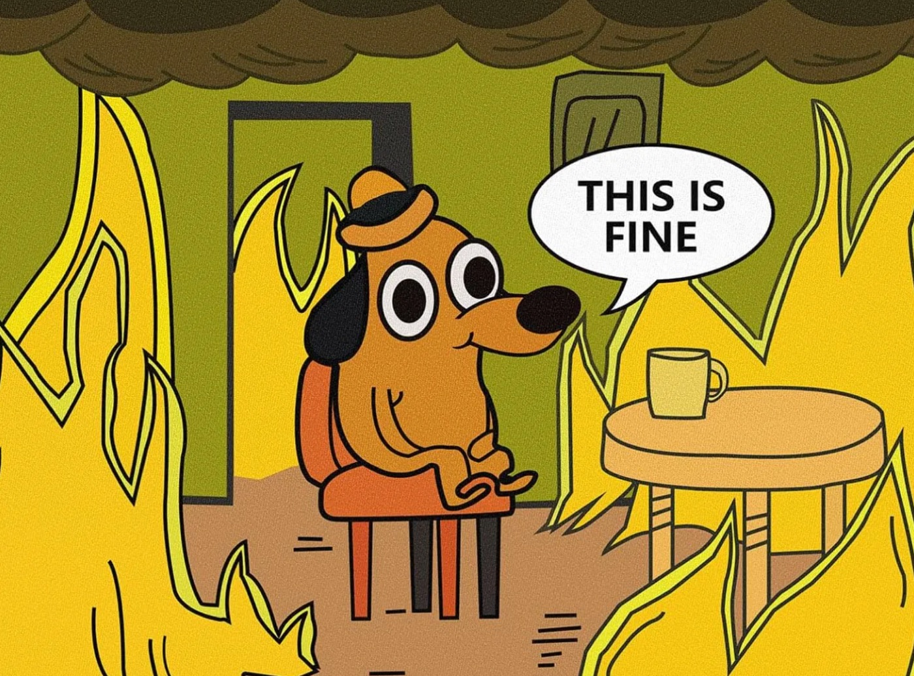

How I’m Learning to Think About Problems

At the beginning of every new year, I like to remind God, jokingly but also not entirely joking, that I’m not one of His strongest soldiers. So if there are any battles being assigned, He can kindly leave my name off the list.
I really do love the idea of an easy life. Minimal obstacles. Things working the way they’re supposed to. A smooth run. But that’s all it is in the end. An idea. In reality, problems are endless, and they have a very reliable way of finding you.
When we started Accrue, I was convinced my village people had finally locked onto me. The issues that kept popping up made the whole building process feel unnecessarily frustrating. Every time something got fixed, something else surfaced. It was hard not to take it personally.
Over time, though, I think the constant obstacles have forced me to see things differently. I’m realising that the way you think about problems matters a lot, maybe more than the problems themselves. Without the right perspective, the whole thing can drive you a little mad.
The shift for me has been acceptance. Just accepting that this is my life and things will sometimes, many times, not go the way I planned. There isn’t a shortcut to that kind of acceptance. I got there slowly, mostly by noticing that problems are relentless, whether I like it or not. And also by noticing that every time I manage to solve one, I come out slightly better than before.
This acceptance has come grudgingly. Because every time one fire is put out, if I look closely enough, there’s always another ember somewhere waiting its turn.
I’ve had to relax and accept that this is the game. And strangely, once I stopped fighting that reality, building started to feel more enjoyable. Over the past year, especially, I’ve started to see problems less like potholes in the road and more like the road itself.
I feel less frustrated these days. And I don’t think my village people have quite the level of influence I once gave them.
Since the problems aren't going away, I think everyone has to find their own little ways to stay sane through them. Mine are not groundbreaking, clearly. But they work for me.
Here are a few ways I manage mine:
1. Prayer: Prayer grounds me.
2. Ranting and escaping to my friends’ houses: Shout out to my friends for letting me talk their ears off and spend time at their houses when I need to get out of my own head. Sometimes I don’t even need advice. I just need to gist, laugh, eat someone else’s food, and remember that there is life outside whatever is stressing me.
3. Community: This one takes me back to secondary school. You know when you think you’ve done badly in a test, then you start asking around and realise the whole class failed? There’s a strange comfort in that. Problems can make you feel like your own case is the worst. But when I talk to other people building things, I’m reminded that we are all in this together, lmao. More importantly, I get to talk to people who’ve been through what I’m going through and learn from their wisdom.
4. Pedicures: Pedicures just do something ethereal to me.
5. Sleep: You really can’t go wrong with good sleep. The problem will still be there when you wake up, unfortunately. But at least you’ll have more brain cells to deal with it.